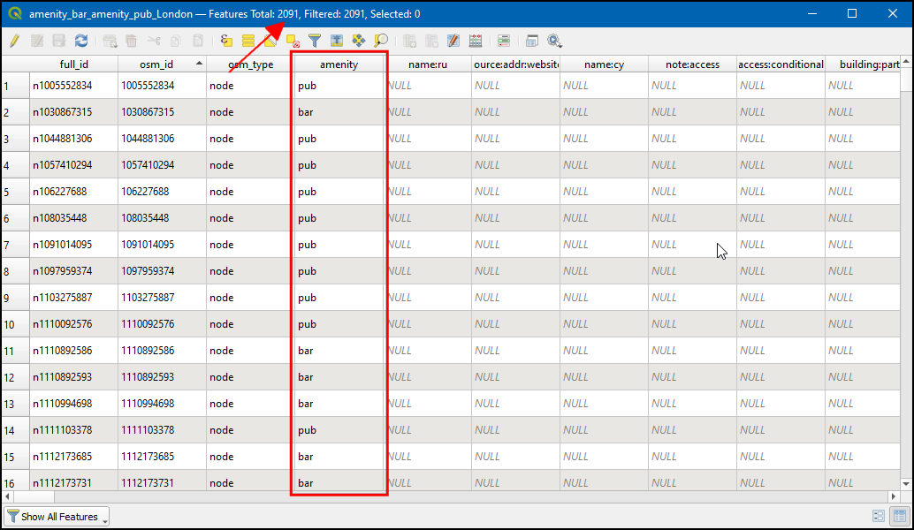

Ujaval Gandhi
Ujaval GandhiBuscar y Descargar Datos de OpenStreetMap (QGIS3)¶
Obtener datos de alta calidad es esencial para cualquier tarea de SIG. Un gran recurso de datos gratuitos y con licencia abierta es OpenStreetMap(OSM) . La base de datos de OSM consta de todo tipo de datos cartográficos: calles, datos locales, polígonos de edificios, límites administrativos, etc. Acceder a los datos de OSM en formato GIS en QGIS es posible a través del complemento QuickOSM. Este tutorial explica el proceso de búsqueda, descarga y uso de este complemento.
Vista general de la tarea¶
Extraeremos ubicaciones de todos los bares y tabernas en Londes de la base de datos OpenStreetMap y las guardaremos como una capa vectorial.
Otras habilidades que aprenderá¶
Cómo encadenar múltiples consultas en el complemento QuickOSM.
Procedimiento¶
Busque e instale el complemento QuickOSM desde el repositorio oficial de complementos de QGIS. Consulte Uso de Complementos para obtener instrucciones sobre la descarga de complementos. Asegúrese de tener la casilla de verificación seleccionada. Haga clic en Cerrar.

Una vez instalado, inicie el complemento desde .

En la pestaña Consulta rápida, puede establecer un filtro para seleccionar un subconjunto. Los atributos de las características del mapa en la base de datos de OSM se almacenan como Etiquetas. Las etiquetas se representan con una clave y un valor. La clave es un tema y el valor es una forma específica. Vea la página wiki de OSM Map Features para una lista completa de etiquetas para varios tipos de características. Los bares se representan con la etiqueta
amenity:bary los pubs con la etiquetaamenity:pub. Primero extraeremos los bares. Seleccioneamenitycomo etiqueta Key en el menú desplegable.

Seleccione
bardel menú desplegable Value.

Podemos encadenar múltiples consultas en la última versión (v2.0.0 +) del complemento QuickOSM. Haga clic en el botón más siguiente barra de selección de consulta aparecerá. Haga clic en el primer cuadro de selección donde podemos obtener la opción
AndyOr. And seleccionará sólo la característica que es verdadera para todas las consultas. Or seleccionará todas las características que son verdaderas para cualquiera de las consultas. Haga clic enOrpara seleccionar las características del bar y del pub.

Seleccione
amenitycomo Clave en el menú desplegable. A continuación, seleccionepuben el menú desplegable Value.

Ingrese
Londonen In para restringir la búsqueda dentro del límite de la ciudad.

Expanda la sección Avanzado. En el modelo de datos OSM, los objetos espaciales son representados usando nodos, vías y relaciones. Como estamos interesados en los objetos espaciales punto, podemos seleccion sólo
NodeyPoints. Clic en Ejecutar consulta.

Una vez finalizada la consulta, cambie a la ventana principal de QGIS. Verá una nueva capa llamada
amenity_bar_amenity_pub_Londonañadida al panel Capas`. El lienzo mostrará las ubicaciones de los bares y tabernas que se extrajeron.

Abra la tabla de atributos de la capa. Hay
2091objetos espaciales. La columna amenity contiene la categoría si el objeto espacial espubobar. Usando esta columna categórica, vamos a dar estilo a nuestra capa.

Haga clic en el icono Abrir el panel de estilo de capas, seleccione
Categorizadoy luego en Valor seleccioneamenidady luego haga clic en Clasificar. Ahora la capa será estilizada con 2 colores que incluyen tantobarrascomopubs.

Ahora haga clic con el botón derecho en la capa, :menuselección:`Exportar --> Guardar objeto espacial como...` para exportar la capa como GeoPackage.

En el cuadro de diálogo Guardar capa vectorial como…, en Formato elija
GeoPackage, en Nombre de archivo haga clic en...y busque el directorio donde desea guardar los datos y nombre la salidalondon.gpkg. En Nombre de la capa introduzcabar_and_pubs. Haga clic en Aceptar.

Ahora se añadirá al lienzo una capa GeoPackage
london_bar_and_pubs.

If you want to give feedback or share your experience with this tutorial, please comment below. (requires GitHub account)